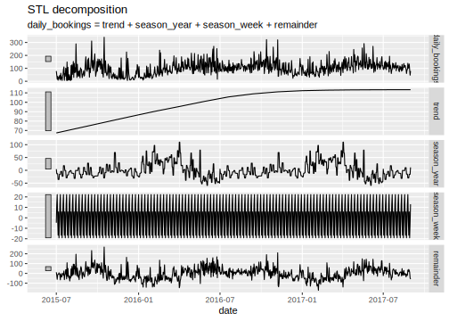

Chapter 7 Data Preparation
Importing a dataset properly is just the first of several milestones until an analysis-ready dataset is generated. In some cases, cleaning the raw data is a necessary step to facilitate/enable proper parsing of the data set in order to import it. However, most of the cleaning/preparing (‘wrangling’) with the data follows after the proper parsing of structured data. Many aspects of data wrangling are specific to certain datasets and an entire curriculum could be filled with different approaches and tools to address specific problems. Moreover, proficiency in data wrangling is generally a matter of experience in working with data, gained over many years. Here, we focus on two quite general and broadly applicable techniques that are central to cleaning and preparing a dataset for analysis: Simple string operations (find/replace parts of text strings) and reshaping rectangular data (wide to long/long to wide). The former is focused on individual variables at a time, while the latter typically happens at the level of the entire dataset.
7.1 Cleaning data with basic string operations
Recall that most of the data we read into R for analytic purposes is essentially a collection of raw text (structured with special characters). When parsing the data in order to read it into R with high-level functions such as the ones provided in the readr-package, both the structure and the types of the data are considered. The resulting data.frame/tibble might thus contain variables (different columns) of type character, factor, or integer, etc. At this stage it often happens that the raw data is not clean enough for the parser to recognize the data types in each column correctly, and it resorts to just parsing it as character. Indeed, if we have to deal with a very messy dataset it can make a lot of sense to constrain the parser such that it reads each column as character.
As we will rely on functions provided in the tidyverse, we first load this package.
library(tidyverse)Let’s create a sample dataset to illustrate some of the typical issues regarding unclean data that we might encounter in empirical economic research (and many similar domains of data analysis).20
messy_df <- data.frame(last_name = c("Wayne", "Trump", "Karl Marx"),
first_name = c("John", "Melania", ""),
gender = c("male", "female", "Man"),
date = c("2018-11-15", "2018.11.01", "2018/11/02"),
income = c("150,000", "250000", "10000"),
stringsAsFactors = FALSE)Assuming we have managed to read this dataset from a local file (with all columns as type character), the next step is to clean each of the columns such that the dataset is ready for analysis. Thereby we want to make sure that each variable (column) is set to a meaningful data type, once it is cleaned. The cleaning of the parsed data is often easier to do when the data is of type character. Once it is cleaned, however, we can set it to a type that is more useful for the analysis part. For example, in the final dataset a column containing numeric values should be stored as numeric or integer, so we can perform math operations on it later on (compute sums, means, etc.).
7.1.1 Find/replace character strings, recode factor levels
Our dataset contains a typical categorical variable: gender. In R it is good practice to store such variables as type factor. Without really looking at the data values, we might thus be inclined to do the following:
messy_df$gender <- as.factor(messy_df$gender)
messy_df$gender## [1] male female Man
## Levels: female male ManThe column is now of type factor. And we see that R defined the factor variable such that an observation can be one of three categories (‘levels’): female, male, or Man. In terms of content, that probably does not make too much sense. If we were to analyze the data later on and compute the share of males in the sample, we would only count one instead of two. Hence, we better recode the gender variable of male subjects as male and not Man. How can this be done programmatically?
One approach is to select all entries in messy_df$gender that are equal to "Man" and replace these entries with "male".
messy_df$gender[messy_df$gender == "Man"] <- "male"
messy_df$gender## [1] male female male
## Levels: female male ManNote, however, that this approach is not really perfect, because R still considers Man as a valid possible category in this column. This can have consequences for certain types of analyses we might want to run on this dataset later on.21 Alternatively, we can use a function fct_recode() (provided in tidyverse), specifically made for such operations with factors.
messy_df$gender <- fct_recode(messy_df$gender, "male" = "Man")
messy_df$gender## [1] male female male
## Levels: female maleThe latter can be very useful when several factor levels need to be recoded at once. Note that in both cases, the underlying logic is that we search for strings that are identical to "Man" and replace those values with "male". Now, the gender variable is ready for analysis.
7.1.2 Removing individual characters from a string
The income column contains numbers, so let’s try to set this column to type integer.
as.integer(messy_df$income)## Warning: NAs introduced by coercion## [1] NA 250000 10000R is warning us that something did not go well when executing this code. We see that the first value of the original column has been replaced with NA (‘Not Available’/‘Not Applicable’/‘No Answer’). The reason is that the original value contained a comma (,) which is a special character. The function as.integer() does not know how to translate such a symbol to a number. Hence, the original data value cannot be translated into a number (integer). In order to resolve this issue, we have to remove the comma (,) from this string. Or, more precisely, we will locate this specific character within the string and replace it with an empty string ("") In order to do so, we’ll use the function str_replace() (for ‘string replace’).
messy_df$income <- str_replace(messy_df$income, pattern = ",", replacement = "")Now we can successfully set the column as type integer.
messy_df$income <- as.integer(messy_df$income)7.1.3 Splitting strings
From looking at the last_name and first_name columns of our messy dataset, it becomes clear that the last row is not accurately coded. Karl should show up in the first_name column. In order to correct this, we have to extract a part of one string and store this sub-string in another variable. There are several ways to do this. Here, it probably makes sense to split the original string into two parts, as the white space between Karl and Marx indicates the separation of first and last name. For this, we can use the function str_split().
First, we split the strings at every occurrence of white space (" "). Setting the option simplify=TRUE, we get a matrix containing the individual sub-strings after the splitting.
splitnames <- str_split(messy_df$last_name, pattern = " ", simplify = TRUE)
splitnames## [,1] [,2]
## [1,] "Wayne" ""
## [2,] "Trump" ""
## [3,] "Karl" "Marx"As the first two observations did not contain any white space, there was nothing to split there and the function simply returned empty strings "". In a second step, we replace empty observations in the first_name column with the corresponding values in splitnames.
problem_cases <- messy_df$first_name == ""
messy_df$first_name[problem_cases] <- splitnames[problem_cases, 1]Finally, we have to correct the last_name column by replacing the respective values.
messy_df$last_name[problem_cases] <- splitnames[problem_cases, 2]
messy_df## last_name first_name gender date income
## 1 Wayne John male 2018-11-15 150000
## 2 Trump Melania female 2018.11.01 250000
## 3 Marx Karl male 2018/11/02 100007.1.4 Parsing dates
Finally, we take a look at the date-column of our dataset. For many data preparation steps as well as visualization and analysis, it is advantageous to have times and dates properly parsed as type Date. In practice, dates and times are often particularly messy because no unique standard has been used to define the format in the data collection phase. This seems also to be the case in our dataset. In order to work with dates, we load the lubridate package.
library(lubridate)This package provides several functions to parse and manipulate date and time data. From looking at the date-column we see that the format is basically year, month, day. We can thus use the ymd()-function provided in the lubridate-package in order to parse the column as Date type.
messy_df$date <- ymd(messy_df$date)Note how this function automatically recognizes how different special characters have been used in different observations to separate years from months/days.
Now, our dataset is cleaned up and ready to go.
messy_df## last_name first_name gender date income
## 1 Wayne John male 2018-11-15 150000
## 2 Trump Melania female 2018-11-01 250000
## 3 Marx Karl male 2018-11-02 10000str(messy_df)## 'data.frame': 3 obs. of 5 variables:
## $ last_name : chr "Wayne" "Trump" "Marx"
## $ first_name: chr "John" "Melania" "Karl"
## $ gender : Factor w/ 2 levels "female","male": 2 1 2
## $ date : Date, format: "2018-11-15" ...
## $ income : int 150000 250000 100007.2 Reshaping datasets
Apart from cleaning and standardizing individual data columns, preparing a dataset for analysis often involves bringing the entire dataset in the right ‘shape.’ Typically, what we mean by this is that in a table-like (two-dimensional) format such as data.frames and tibbles, data with repeated observations for the same unit can be displayed/stored in either long or wide format. It is often seen as good practice to prepare data for analysis in long (‘tidy’) format. This way we ensure that we follow the (‘tidy’) paradigm of using the rows for individual observations and the columns to describe these observations.22 Tidying/reshaping a dataset in this way thus involves transforming columns into rows (i.e., melting the dataset). In the following, we first have a close look at what this means conceptually and then apply this technique in two examples.
7.2.1 Tidying messy datasets.
Consider the following stylized example (Wickham 2014).
| person | treatmenta | treatmentb |
|---|---|---|
| John Smith | NA | 2 |
| Jane Doe | 16 | 11 |
| Mary Johnson | 3 | 1 |
The table shows observations of three individuals participating in an experiment. In this experiment, the subjects might have been exposed to treatment a and/or treatment b. Their reaction to either treatment is measured in numeric values (the results of the experiment). From looking at the raw data in its current shape, this is not really clear. While we see which numeric value corresponds to which person and treatment, it is not clear what this value is. One might, for example, wrongly assume that the numeric values refer to the treatment intensity of a and b. Such interpretation would be in line with the idea of columns containing variables and rows observations. But, considering what the numeric values actually stand for, we realize that the columns actually are not names of variables but values of a variable (the categorical variable treatment, with levels a and b).
Now consider the same data in ‘tidy’ format (variables in columns and observations in rows).
| person | treatment | result |
|---|---|---|
| John Smith | a | NA |
| John Smith | b | 2 |
| Jane Doe | a | 16 |
| Jane Doe | b | 11 |
| Mary Johnson | a | 3 |
| Mary Johnson | b | 1 |
This long/tidy shape of the dataset has several advantages. First, it is now clear what the numeric values refer to. Second, in this format it is much easier to filter/select the observations.
7.2.2 Pivoting from ‘wide to long’ (“gathering”)
In the tidyverse context, we call the transformation of columns to rows ‘pivoting from wide to long.’ That is we pivot columns into keys (or names) and values. A most typical situation where this has to be done in applied data analysis is when a dataset contains for the same subjects several observations over time. To illustrate how pivoting from wide to long works in practice, consider the following example dataset (extending on the example above).
wide_df <- data.frame(last_name = c("Wayne", "Trump", "Marx"),
first_name = c("John", "Melania", "Karl"),
gender = c("male", "female", "male"),
income.2018 = c("150000", "250000", "10000"),
income.2017 = c( "140000", "230000", "15000"),
stringsAsFactors = FALSE)
wide_df## last_name first_name gender income.2018 income.2017
## 1 Wayne John male 150000 140000
## 2 Trump Melania female 250000 230000
## 3 Marx Karl male 10000 15000The two last columns contain both information on the same variable (income), but for different years. We thus want to pivot these two columns in a new year and income column, ensuring that columns correspond to variables and rows correspond to observations. For this, we call the pivot_longer()-function as follows:
long_df <- pivot_longer(wide_df, c(income.2018, income.2017), names_to = "year", values_to = "income")
long_df## # A tibble: 6 x 5
## last_name first_name gender year income
## <chr> <chr> <chr> <chr> <chr>
## 1 Wayne John male income.2018 150000
## 2 Wayne John male income.2017 140000
## 3 Trump Melania female income.2018 250000
## 4 Trump Melania female income.2017 230000
## 5 Marx Karl male income.2018 10000
## 6 Marx Karl male income.2017 15000We can further clean the year column to only contain the respective numeric values.
long_df$year <- str_replace(long_df$year, "income.", "")
long_df## # A tibble: 6 x 5
## last_name first_name gender year income
## <chr> <chr> <chr> <chr> <chr>
## 1 Wayne John male 2018 150000
## 2 Wayne John male 2017 140000
## 3 Trump Melania female 2018 250000
## 4 Trump Melania female 2017 230000
## 5 Marx Karl male 2018 10000
## 6 Marx Karl male 2017 150007.2.3 Pivoting from ‘long to wide’ (“spreading”)
As we want to adhere to the ‘tidy’ paradigm of keeping our data in long format, the transformation of ‘long to wide’ is less common. However, it might be necessary if the dataset at hand is particularly messy. The following example illustrates such a situation.
weird_df <- data.frame(last_name = c("Wayne", "Trump", "Marx",
"Wayne", "Trump", "Marx",
"Wayne", "Trump", "Marx"),
first_name = c("John", "Melania", "Karl",
"John", "Melania", "Karl",
"John", "Melania", "Karl"),
gender = c("male", "female", "male",
"male", "female", "male",
"male", "female", "male"),
value = c("150000", "250000", "10000",
"2000000", "5000000", "NA",
"50", "25", "NA"),
variable = c("income", "income", "income",
"assets", "assets", "assets",
"age", "age", "age"),
stringsAsFactors = FALSE)
weird_df## last_name first_name gender value variable
## 1 Wayne John male 150000 income
## 2 Trump Melania female 250000 income
## 3 Marx Karl male 10000 income
## 4 Wayne John male 2000000 assets
## 5 Trump Melania female 5000000 assets
## 6 Marx Karl male NA assets
## 7 Wayne John male 50 age
## 8 Trump Melania female 25 age
## 9 Marx Karl male NA ageWhile the data is somehow in long format, the rule that each column should correspond to a variable (and vice versa) is ignored. Data on income, assets, as well as the age of the individuals in the dataset are all put in the same column. We can call the function pivot_wider() with the two parameters names and value to correct this.
tidy_df <- pivot_wider(weird_df, names_from = "variable", values_from = "value")
tidy_df## # A tibble: 3 x 6
## last_name first_name gender income assets age
## <chr> <chr> <chr> <chr> <chr> <chr>
## 1 Wayne John male 150000 2000000 50
## 2 Trump Melania female 250000 5000000 25
## 3 Marx Karl male 10000 NA NA7.3 Tutorial: Hotel Bookings Time Series
This tutorial guides you step-by-step through the cleaning script (with a few adaptions) of tidytuesday’s Hotel Bookings repo, dealing with the preparation and analysis of two datasets with hotel demand data. Along the way, you also get in touch with the janitor package. For details about the two datasets see the paper by Nuno Antonio, de Almeida, and Nunes (2019) and for the original research contribution related to these datasets see the paper by N. Antonio, de Almeida, and Nunes (2017).
Nuno Antonio, de Almeida, and Nunes (2019) summarize the content of the datasets as follows: “One of the hotels (H1) is a resort hotel and the other is a city hotel (H2). Both datasets share the same structure, with 31 variables describing the 40,060 observations of H1 and 79,330 observations of H2. Each observation represents a hotel booking. Both datasets comprehend bookings due to arrive between the 1st of July of 2015 and the 31st of August 2017, including bookings that effectively arrived and bookings that were canceled. Since this is real data, all data elements pertaining hotel or costumer identification were deleted. Due to the scarcity of real business data for scientific and educational purposes, these datasets can have an important role for research and education in revenue management, machine learning, or data mining, as well as in other fields.”
The aim of the tutorial is to get the data in the form needed for the following plot.

The first few rows and columns of the final dataset should combine the two source datasets and look as follows:
head(hotel_df)## # A tibble: 6 x 32
## hotel is_canceled lead_time arrival_date_year
## <chr> <dbl> <dbl> <dbl>
## 1 Resort Hotel 0 342 2015
## 2 Resort Hotel 0 737 2015
## 3 Resort Hotel 0 7 2015
## 4 Resort Hotel 0 13 2015
## 5 Resort Hotel 0 14 2015
## 6 Resort Hotel 0 14 2015
## # … with 28 more variables: arrival_date_month <chr>,
## # arrival_date_week_number <dbl>,
## # arrival_date_day_of_month <dbl>,
## # stays_in_weekend_nights <dbl>,
## # stays_in_week_nights <dbl>, adults <dbl>,
## # children <dbl>, babies <dbl>, meal <chr>,
## # country <chr>, market_segment <chr>,
## # distribution_channel <chr>,
## # is_repeated_guest <dbl>,
## # previous_cancellations <dbl>,
## # previous_bookings_not_canceled <dbl>,
## # reserved_room_type <chr>,
## # assigned_room_type <chr>, booking_changes <dbl>,
## # deposit_type <chr>, agent <chr>, company <chr>,
## # days_in_waiting_list <dbl>, customer_type <chr>,
## # adr <dbl>, required_car_parking_spaces <dbl>,
## # total_of_special_requests <dbl>,
## # reservation_status <chr>,
## # reservation_status_date <date>7.4 Set up and import
All the tools we need for this tutorial are provided in tidyverse and janitor, and the data is directly available from the tidytuesday GitHub repository. The original data is provided in csv format.
# SET UP --------------
# load packages
library(tidyverse)
library(janitor) # install.packages("janitor") (if not yet installed)
# fix variables
url_h1 <- "https://raw.githubusercontent.com/rfordatascience/tidytuesday/master/data/2020/2020-02-11/H1.csv"
url_h2 <- "https://raw.githubusercontent.com/rfordatascience/tidytuesday/master/data/2020/2020-02-11/H2.csv"
## DATA IMPORT -----------------
h1 <- read_csv(url_h1)
h2 <- read_csv(url_h2)In a next step we clean the column names and add an additional column in order to clarify to which of the two hotels the corresponding observations belong (see dataset description above). Finally, we stack the observations (rows) together in one tibble/data.frame.
## CLEAN DATA -------------------------
# use the janitor-package clean_names function. see ?clean_names for details
h1 <- clean_names(h1)
h2 <- clean_names(h2)
# add column to clarify origin of observation
h1 <- mutate(h1, hotel="Resort Hotel")
h2 <- mutate(h2, hotel="City Hotel")
# stack observations
hotel_df <- bind_rows(h1,h2)
# inspect the first observations
head(hotel_df)## # A tibble: 6 x 32
## is_canceled lead_time arrival_date_year
## <dbl> <dbl> <dbl>
## 1 0 342 2015
## 2 0 737 2015
## 3 0 7 2015
## 4 0 13 2015
## 5 0 14 2015
## 6 0 14 2015
## # … with 29 more variables: arrival_date_month <chr>,
## # arrival_date_week_number <dbl>,
## # arrival_date_day_of_month <dbl>,
## # stays_in_weekend_nights <dbl>,
## # stays_in_week_nights <dbl>, adults <dbl>,
## # children <dbl>, babies <dbl>, meal <chr>,
## # country <chr>, market_segment <chr>,
## # distribution_channel <chr>,
## # is_repeated_guest <dbl>,
## # previous_cancellations <dbl>,
## # previous_bookings_not_canceled <dbl>,
## # reserved_room_type <chr>,
## # assigned_room_type <chr>, booking_changes <dbl>,
## # deposit_type <chr>, agent <chr>, company <chr>,
## # days_in_waiting_list <dbl>, customer_type <chr>,
## # adr <dbl>, required_car_parking_spaces <dbl>,
## # total_of_special_requests <dbl>,
## # reservation_status <chr>,
## # reservation_status_date <date>, hotel <chr>The option
stringsAsFactors = FALSEensures that all of the columns in this data frame are of typecharacter.↩︎If we perform the same operation on this variable before coercing it to a
factor, this problem does not occur.↩︎Depending on the dataset, however, an argument can be made that storing the data in wide format might be more efficient (using up less memory) than long format.↩︎